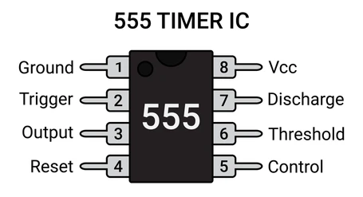
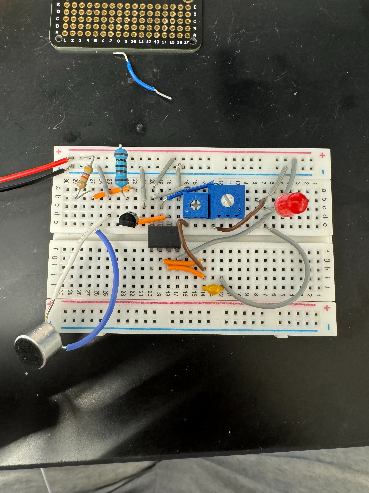
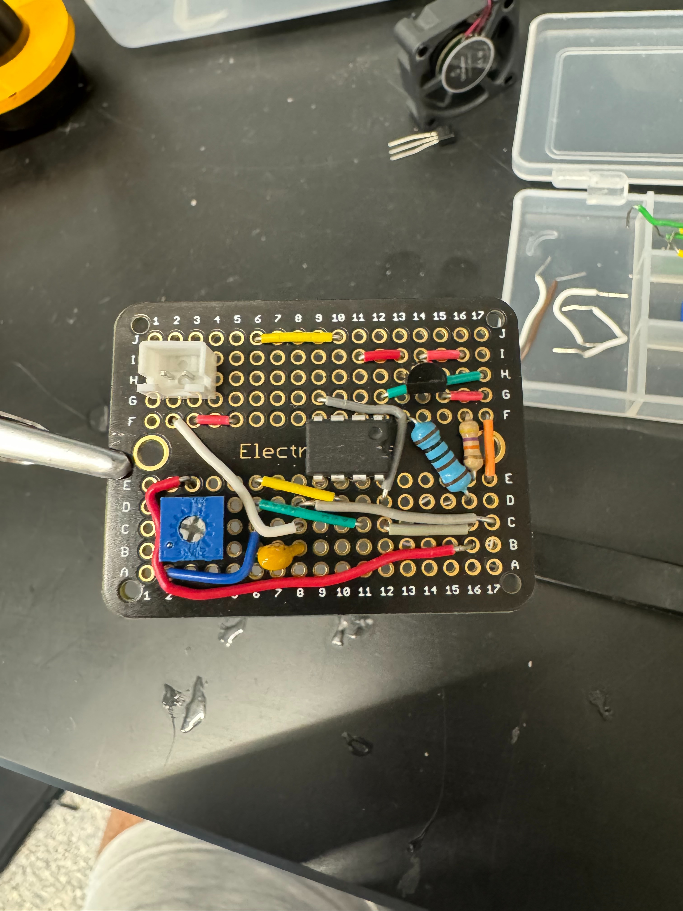
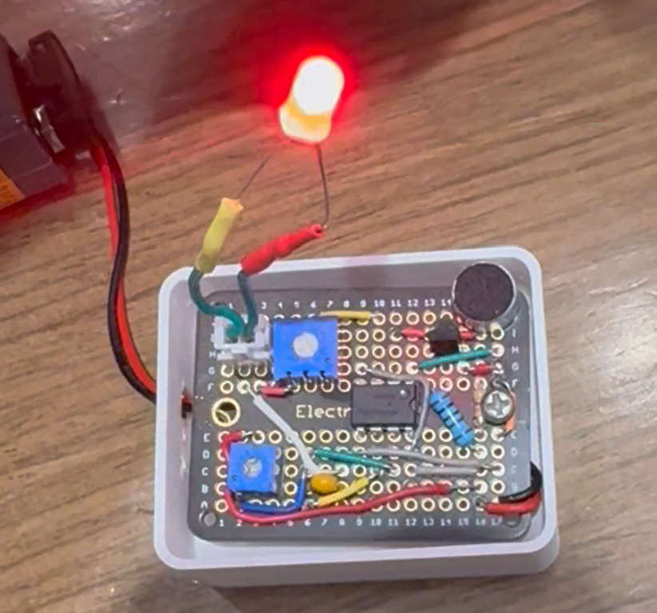

Gallery



I wanted to create a prototypical version of some interesting devices I had seen before that were sound-activated (like lights that turn on via a snap or a clap). However, I wanted to do this without using a microcontroller or other digital components, and I also wanted to have modular control over the device I was powering and the duration for which it would be powered on.
Did not want the inclusion of any digit logic or circuitry whatsoever
Have the ability to choose the device I want to power and switch out devices as necessary. Also be able to control how long the device remains on for.
Wanted to the project to fit a very small profile (so that it was portable) and have a nice casing (most likely 3D printed).


The circuit uses a MOSFET and an LM555 timer IC to power the load when a snap (or a loud sound in general) is heard on the microphone. The circuit works by using the microphone input signal as the gate for the MOSFET, which triggers the 555 IC and provides power to the load circuit. The 555 IC turns the load device on for a duration proportional to the product of the capacitance and series resistance on pin 6 (threshold) of the IC.
As described in the previous section, the duration for which the load is powered on is proportional to RC where C is the capacitance and R is the resistance connected to the threshold pin of the 555 IC. Thus, by introducing a potentiometer to serve as this resistance, we can control the amount of series resistance, and thus control the duration for which the load is powered. We also add a potentiometer between the load and the power source, allowing us to change our resistance according to the load device we decide to use (this method is used only because the loads used require relatively low voltage to operate and load resistance is generally constant).
For the outer casing of the circuit (done on a protoboard) I designed a casing in SolidWorks and had it 3D printed. The casing contained slots for the mic, load connector, and power supply, and had screw holes for standoffs on which the protoboard was mounted.
